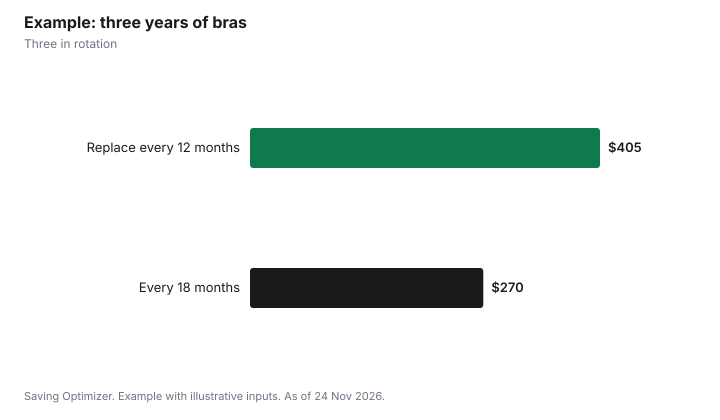

Clothing · Canada
Bras on a Budget: Getting Fitted and Making Them Last

The cheapest bra is one that fits and lasts. Get a free fitting at a lingerie store, then buy two or three you can rotate. Hand-washing and air-drying help bras keep their shape past the usual 6 to 12 months. Buy during sales, not when your only bra wears out.
Key takeaways
- Lingerie store staff will help with fitting at no charge.
- Typical life: 6 to 12 months, depending on wear and care (checked 24 Nov 2026).
- Rotate two or three bras so each rests between wears.
- Hand-wash or use a mesh bag on cold, and air-dry.
- Buy during sales, not in a rush.
Fit signs
| Area | Good fit | Sign of a poor fit |
|---|---|---|
| Band | Level all the way around, snug on the loosest hook | Rides up at the back |
| Cups | Smooth, no gaps | Gaps or spilling over |
| Straps | Stay put without digging | Slip off or leave marks |
| Centre | Sits flat against the chest | Lifts away |
Make them last
- Rotate so the elastic recovers between wears.
- Hand-wash, or use a mesh bag on cold.
- Never put bras in the dryer.
- Fasten hooks before washing.
- Store flat or with cups nested.

Savings: an example
Example: three bras at an example $45 each, rotated and hand-washed, last 18 months instead of 12. Over three years you buy six instead of nine, saving $135.
See making clothes last and the best time to buy clothes.
Sources
- Today.com, How often should you replace your bra (La Vie en Rose design director), checked 24 Nov 2026.
- Global News, How to buy a bra (La Vie en Rose bra expert), checked 24 Nov 2026.
Frequently asked questions
Where can I get a free bra fitting in Canada?
Many lingerie stores, such as La Vie en Rose, help with fitting in store at no charge.
How often should I replace a bra?
Usually every 6 to 12 months, depending on how often you wear it and how you care for it.
How many bras do I need?
At least two or three, so you can rotate them.
Can I put bras in the dryer?
No. Heat breaks down the elastic. Air-dry them.
How do I know my bra doesn't fit?
The band rides up, cups gap or spill, or straps dig or slip.
Researched and drafted with AI assistance and fact-checked against official Canadian sources. How we create content.
Note: Bra prices and lifespan are examples. Education only.